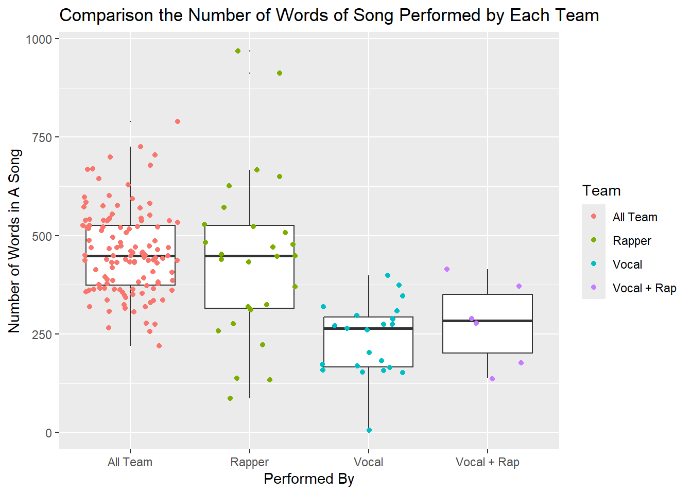

bts_songs <- read.csv("dataset/lyrics-v12.csv") %>%
filter(lyrics != "", repackaged != TRUE, !str_detect(eng_track_title, "Skit.*"), eng_track_title != "“Thanks To” Notes", eng_track_title != "Love Yourself: Answer Notes") |>
select(-kor_track_title, -id, -track_title, -has_full_ver, -repackaged, -album_title)|>
mutate(album_rd = as.Date(album_rd, format = "%Y-%m-%d"))Mini Project 3: Strings and Regular Expressions
INTRODUCTION
BTS (Bangtan Sonyeondan or “Beyond the Scene”) is a Grammy-nominated South Korean group that has been capturing the hearts of millions of fans globally since their debut in June 2013.

The members of BTS are RM, Jin, SUGA, j-hope, Jimin, V, and Jung Kook. This 7-member K-Pop boy group gains recognition for their authentic and self-produced music, top-notch performances, and the way they interact with their fans as well as has established themselves as “21st century Pop Icons” breaking countless world records.
They always thrive to impart the positive impact to the youth in all around the world with meaningful activities such as the LOVE MYSELF campaign and the UN ‘Speak Yourself’ speech, which help them mobilize millions of fans - the ARMY - across the world.
During 11 years, they have released more than 200 songs with a wide range of genres, with most of them composed and produced by the group members. The topics of their lyrics focus on subjects including mental health, the troubles of school-age youth and coming of age, loss, the journey towards self-love, individualism, and the consequences of fame and recognition.
As an ARMY, I want to utilize the text analysis skill I acquired from MSCS264 to conduct some data mining with their song lyrics and look forward to discover some meaningful pattern in the song lyrics.
DATASET WRANGLING
Data source: Kaggle
The data set has 16 variables and 301 observational units. It listed out all the songs that BTS has released up to their newest single “Take Two”. I removed the songs that only has instrument. Also, in some of their repackaged albums, most of the songs have been already released in the previous albums. I decided to filter out these repackaged songs to remove the duplicates. Besides, I excluded some skits, which are the normal life conversation between members. Finally, I just removed some columns that I did not need to use.
Since I wanted to analyse the lyrics on the word level, I produced a data set for this approach.
Word level:
I removed the new line character and also some phrases which purpose is for hyping up. I also cleared some special characters. Then I converted all the words into lowercase, which makes it easier to analyze.
bts_lyrics <- bts_songs |>
mutate(
lyrics = str_replace_all(lyrics, "\n", " "), # Remove newline characters
lyrics = str_replace_all(lyrics, "[\\(\\{][^\\)\\}]*[\\)\\}]", ""),
lyrics = str_replace_all(lyrics, "[,\\*\\.!\`\'“”‘]", ""),
lyrics = str_replace_all(lyrics, "\"", ""),
lyrics = tolower(lyrics)
)TEXT ANALYSIS
What are the words used the most in BTS’ lyrics?
The lyrics investigated are the English translated version of the Korean songs and the original from the English songs of the group. I used the stop words list to exclude the common English words that has high frequency but not convey much information. I did tweak the list a little bit. First of all,
I have to remove myself, yourself, yourselves, and ourselves from the list. As I mentioned above, BTS, supported by UNICEF, promotes the Love Myselfcampaign with the frequent existence of the motto “Love Yourself” and “Love Ourselves” in their lyrics so these words play an important role in their lyrics. Additionally, BTS usually uses some non-lexical vocables to fill space or add a rhythmic and melodic element to a song so I also added some common vocables that appear in their song.
stopwordsList <- as_tibble(stopwords("en")) |>
add_row(value="na") |>
add_row(value="la") |>
add_row(value="_") |>
add_row(value="oh") |>
add_row(value="yeah") |>
add_row(value="ay") |>
add_row(value="ya") |>
add_row(value = "im") |>
add_row(value = "i’m") |>
add_row(value = "it’s") |>
add_row(value = "don’t") |>
add_row(value = "i’ll")
stopwordsList <- stopwordsList[-c(4,8,12,13),]Then I split all the words in every lyric and put them all in a list. Using the stop words list, I created a frequency tibble for all the words in every BTS’ song.
wordsLyrics <- str_split(bts_lyrics$lyrics, "\\s+")
wordsLyricsList <- unlist(wordsLyrics)
wordsLyricsList <- wordsLyricsList[str_detect(wordsLyricsList,"[A-Za-z']+$")]
wordFreq <- as.data.frame(table(wordsLyricsList)) |>
mutate(wordsLyricsList = as.character(wordsLyricsList)) |>
anti_join(stopwordsList,by=c(wordsLyricsList="value")) |>
slice_max(Freq,n=200)Usually, when we wanted to look at the frequency of words, Word Cloud would be the most representative visualization that is applicable for this purpose.
set.seed(2003)
wordcloud2(data=wordFreq, size=1.5, color = 'random-light')From the word cloud, we can see that like and love are the two words with the highest frequency among all words in the lyrics. BTS always want to send the message to the ARMY that they should “love yourself” to the fullest but they mask it as a love song for the young people. That is the reason why these two words appear more frequently than others. Another noticeably frequent word is run. This word not only embodies the title track of one of their most iconic albums but also encapsulates the essence of relentlessly moving forward, a sentiment deeply resonating with the unwavering spirit of youth in the middle of adversity, a concept intrinsic to BTS. And we could see the word myself, which is a part of their successful campaign’s name that is against violence toward children and teens around the world, with the hope of making the world a better place through music..
Number of Word Distribution Over The Time
During some early years of their career, BTS delved deep into the realm of hip hop, channeling their creative energies predominantly into this genre. During these formative years, while they did experiment with other musical styles, the number of non-hip hop tracks remained relatively limited. Their debut era was characterized by a collection of rap-heavy compositions, where the lyrical content took center stage, resulting in high speechiness. However, as their artistic vision evolved and matured, BTS began to transcend genre boundaries, exploring the vast landscape of pop, R&B, and beyond. With each release, they carved out a distinct identity, showcasing their versatility and willingness to embrace diverse musical influences, thereby captivating audiences worldwide.
I want to analyse whether this change does affect the speechiness of their songs throughout the time.
In their discography, BTS released three lead singles. I removed the two “Dynamite” because this song is included in the album “Be”. I also excluded “Butter/Permission To Dance” since they released these songs separately in two other singles. Then I computed the average of number of words in each album and created a graph to compare it.
bts_albums <- bts_lyrics |>
mutate(lyrics_count = str_count(lyrics, "\\s+")) |>
group_by(album_rd, eng_album_title) |>
summarise(mean_count = mean(lyrics_count)) |>
#remove the three lead singles
filter(!str_detect(eng_album_title,"^Dynamite .") && eng_album_title != "Butter / Permission to Dance")`summarise()` has grouped output by 'album_rd'. You can override using the
`.groups` argument.bts_albums_plot <- bts_albums |>
ggplot(aes(x = album_rd, y = mean_count, text = paste("Album:", eng_album_title, "<br>Release Date:", album_rd, "<br>Mean Count:", round(mean_count, 2)))) +
geom_point(aes(color = eng_album_title), size = 2, alpha = 0.8, show.legend = FALSE) +
labs(x = "Release Date", y = "Mean Number of Words In A Song", title = "Average number of words in each BTS song over time", subtitle = "From 2013 to 2023") +
theme_classic()
plotly_plot <- ggplotly(bts_albums_plot, tooltip = "text")
saveWidget(plotly_plot, file = "plot1.html")This is an interactive plot:
In the albums following “Dark and Wild” (09/2014), there’s a noticeable shift in BTS’s music. The era spanning “Dark and Wild” to “The Most Beautiful Moment in Life” series marks a pivotal moment where the group explored a broader spectrum of genres. This transition brought about changes in line distribution within songs, notably favoring the Vocal team (Jin, Jimin, V, and JK) with increased singing durations. Conversely, the Rap team (RM, Suga, j-hope) saw a decline in their line distribution as rap-centric tracks became less prevalent.
With the diminishing emphasis on rap, the average number of words per song decreased accordingly. To ascertain the impact of reduced rap segments on speechiness, it’s imperative to analyze the variance in word count among songs performed by the Rap team, the Vocal team, and the group as a whole. This exploration promises insights into BTS’s evolving musical dynamics over time.
Difference in Number of Words Performed by The Rap Team, The Vocal Team, and The Whole Group
bts_team_songs <- bts_lyrics |>
mutate(lyrics_count = str_count(lyrics, "\\s+"),
performed_by = fct_collapse(performed_by,
"Rapper" = c("RM", "SUGA", "J-HOPE", "RM; SUGA; J-HOPE", "SUGA; RM", "SUGA; JIMIN", "RM; SUGA"),
"Vocal" = c("JIN", "JUNGKOOK", "V", "JIMIN", "JUNGKOOK; V; JIMIN; JIN", "JIN; JIMIN; JUNGKOOK", "V; JIMIN"),
"All Team" = c("BTS"),
other_level ="Vocal + Rap"
))
ggplot(bts_team_songs, aes(x = performed_by, y = lyrics_count)) +
geom_boxplot(outlier.size = 0.001) +
geom_jitter(aes(color = performed_by)) +
labs(title ="Comparison the Number of Words of Song Performed by Each Team", x = "Performed By", y = "Number of Words in A Song", color = "Team")
We can observe that despite the relatively few songs performed by the rap team, the distribution of speechiness in these songs is somewhat similar to those performed by the entire group, with three notable outliers. Conversely, the vocal team tends to perform songs with lower speechiness. This observation further strengthens my estimation regarding the influence of the genre transition on the average number of words per song produced by the group over the years.